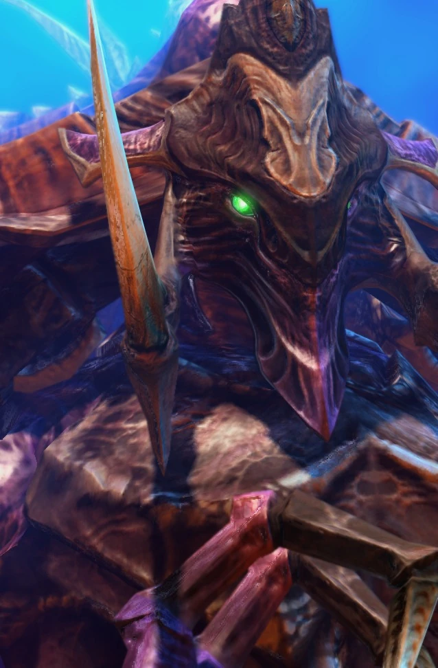
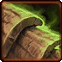
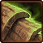

Королева
| Королева | |
|  | |
| Информация о юните | |
| Тип: | Наземная боевая единица |
| Описание: | Защитный юнит. Может создавать (spawn creep tumors), spawn lavra и использовать (transfusion ability). Намного быстрее передвигается по слизи. |
| Построен из: | Инкубатор Логово Улей |
| Требование: | Омут рождения |
| Стоимость: |  150 150  0 0  36 36  2 2 |
| Горячие клавиши: | Q |
| Атака 1: Когти | |
| Цели: | Наземные |
| Урон | 4(+1)(x2) |
| DPS: | 11.2(+2.8) |
| Перезарядка: | 0.71 |
| Радиус атаки: | 5 |
| Атака 2: Когти | |
| Цели: | Воздушные |
| Урон | 9(+1) |
| DPS: | 12.6(+1.4) |
| Перезарядка: | 0.71 |
| Радиус атаки: | 7 |
| Статистика юнита | |
| Защита: |  175  1 (+1) 175  1 (+1) |
| Атрибуты: | Биологическая единица Псионик |
| Энергия: | 25/200 |
| Радиус обзора: | 9 |
| Скорость: | 1.31 |
| Скорость по слизи: | 3.5 |
| Занимаемое место в транспорте: | 2 |
| Силен против: | Геллион Излучатель пустоты Муталиск |
| Слаб против: | Морпех Зилот Зерглинг |
Обзор
Создание этой породы королев было осуществлено по приказу Королевы Клинков, чтобы защитить будущее Роя и действовать как его хозяева улья. Королевы стали использоваться после Войны выводков, начиная с 2501 года. Абатур изменил сущность более старой породы королев и, в конечном счете, хранительницы выводка Арахнис, подавив их способность летать, чтобы улучшить их способность принимать уход за ульем.
Психология
Королевы - разумные существа. Мозг королевы заключен в бронированный череп и соединен с набором нервных шнуров, похожих на те, которыми обладают протоссы. Мозг королевы наделяет ее большими умственными способностями, но эти королевы имеют серьезные ограничения в своей умственной гибкости (в отличие от матерей-выводков), а также ограниченное независимое мышление, анализ и разум. Они играют ограниченную командную роль в уходе за гнездами зергов. На руководящих должностях они наблюдают за ульями и легко координируют меньшие штаммы. Королевы могут развиваться и расти благодаря опыту, а также могут анализировать и передавать любые тактические данные, переданные им повелителями. Королевы обычно не могут общаться устно, но было замечено, что они общаются с другими видами псионически. Они способны слышать, обрабатывать и понимать терранскую речь. У королев есть укоренившийся материнский инстинкт, который не в силах устранить даже глубокая неврологическая реструктуризация.
Эти королевы крепче своих предшественников, включая бронированный череп. В полный рост они примерно в 1,5 раза выше террана в доспехах. Новая морфология этих королев намекает на включение ДНК терранов или протоссов или, возможно, даже измененных зергами генов самой Королевы Клинков. Такая эволюция подразумевала широкомасштабные изменения, произошедшие в иерархии зергов, перераспределение власти, из-за чего с ними было труднее бороться. Когда терраны впервые увидели эту королеву, всеобщей реакцией было то, что кто-то взял кентавра из человеческой легенды, заменил туловище частью многоножки, а нижнюю, лошадиную часть заменил гигантским крабом.
Способности
Яйценосные способности хранительницы выводка арахнисов были пересмотрены и изменены для этих маток, чтобы позволить им производить живые комки ткани, которые прилипают к ползучести и ускоряют ее рост. Эти шарики откладываются через их яйцеклад, мутировавший из того, которым обладает хранитель выводка Арахнис. Эти королевы также производят густое вещество на основе белка, которое стимулирует рост клеток за счет митотических ферментов, которые они способны выделять в жидкой форме. Когда королева покрывает раны организма зергов (структурные или иные) этой красноватой жидкостью, поврежденная ткань регенерирует за считанные секунды. И наоборот, если жидкость смешать с катализатором, выделяемым железой, расположенной на шее матки (что придает ей болезненно-зеленый цвет), и принудительно ввести ее в инкубаторий, личинки будут инкубироваться быстрее.
Как и все наземные разновидности зергов, королевы передвигаются по крипу быстрее, чем по обычной земле. Однако их ноги устроены таким образом, что их движение затруднено при пересечении непроходимых участков; они «скользят» по ползучести, что, в соответствии с конструкцией указанных ног, затрудняет переход по нормальной местности. Ученые Доминиона предположили, что это делается для того, чтобы более умные королевы оставались в непосредственной близости от улья и уменьшали стимулы для них бродить поодиночке.
Королевы обладают развитой способностью манипулировать своим «потомством»; например, к 2503 году они разработали трансформацию зерглинга в бейлинга, породу, которая может сдерживать свою взрывную энергию до нужного момента. Им также было поручено выращивать многочисленные коконы. Эти королевы оснащены кислотными шипами в качестве метательного оружия и когтями, которые можно использовать в рукопашных схватках. Они также могут бросать споры в своих врагов. Однако их биологическое оружие в основном используется для защиты ульев.
Королевы выводка Левиафана невероятно злобны и враждебны. Любые существа, достаточно глупые, чтобы приблизиться к своей кладке с враждебными намерениями, могут быть быстро пронзены множеством шипов.
Игровая единица
Королева — наземный юнит с атакой, состоящей из шипов, запускаемых «крыльями» на спине. Королева выходит прямо из инкубатория (это означает, что она не трансформируется из личинки, а выходит из инкубатория) и требует Омута рождения . Вы не можете установить точку сбора для своей королевы, они всегда появляются непосредственно рядом с инкубаторием в доступном пространстве.
Королевы сильны против геллионов, муталисков и скатов Бездны, но слабы против морских пехотинцев, зерглингов и фанатиков.
Создание избыточных королев вместо или в сочетании с наземными юнитами и Омут рождения является частым вариантом ранней защиты из-за способности королевы блокировать небольшие атаки противника, атаковать воздушные юниты, лечить с помощью переливания и позже распространять опухоли или порождать личинок.
Бонус к скорости передвижения королевы от слизи намного больше, чем у других отрядов зергов, что делает ее особенно медленной, когда она не на слизи, но довольно быстрой, когда она на слизи.